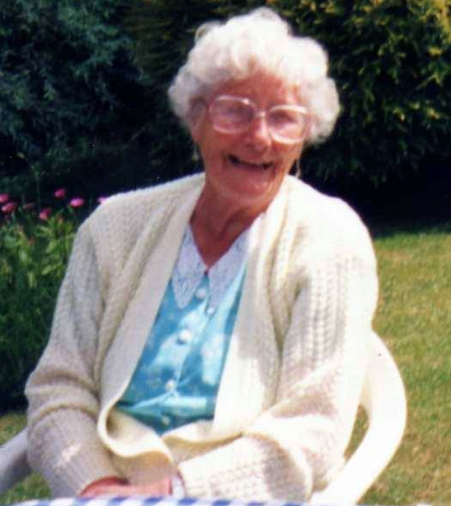

Lillian Ethel Hodge (née Cowell) 1919 - 2001
[ Home ] | [ Calendar ] | [ Surnames Index ] | [ Errors ] | [ Family History ]A leather machinist and the youngest of 3 children of John Cowell (a general carman) and Ethel Kilsby, Lillian Cowell, the fourth cousin once-removed on the mother's side of Nigel Horne, was born in Weedon Bec, Northamptonshire, England on 9 Nov 19191,2. She married Arthur Hodge in Daventry, Northamptonshire, England around Feb 19413.
During her life, she was living at White House Flats in Weedon Bec on 19 Jun 19214 and at 85 West Street in Daventry on 29 Sept 19391.
She died on 21 Feb 2001 in Weedon Bec2 and was buried on 27 Feb 2001.
Parents
- John Francis was born on 16 Sept 1881
- Ethel Blanche was born on 20 Mar 1892
Citations
- 1939 Register - Findmypast (was recorded at this address)
- England & Wales deaths 1837-2007 - Findmypast
- England & Wales marriages 1837-2008 - Findmypast
- 1921 Census Of England & Wales - Findmypast (was age 1 and the daughter of the head of the household)
Media
Lillian Cowell

England & Wales marriages 1837-2008 - BMD/M/1941/1/AZ/000247/013
England & Wales deaths 1837-2007 - BMD/D/2001/2/84301233
1939 Register Transcription - TNA-R39-6140-6140G-010-02
1939 Register Transcription - TNA-R39-6140-6140G-010-01
Family Tree

Map
Generated by ged2site. Last updated on Jul 3, 2024
Known Issues
Burial date (27 Feb 2001) has no citations